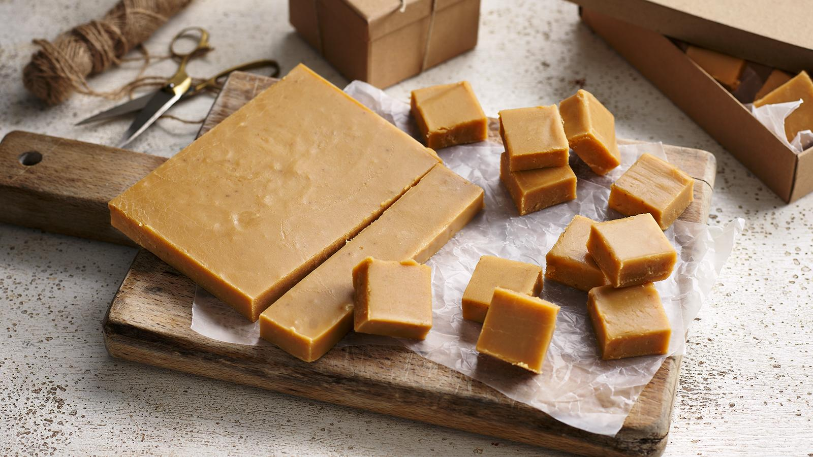

Fudge

Description
This fudge recipe makes really soft, melt-in-the- mouth British-style fudge. A batch of super-creamy fudge makes a
brilliant present for family and friends at birthdays and Christmas.
Use the iced water hack and you won't need a sugar thermometer.
Ingredients
- 397g tin condensed milk
- 450g/1lb light brown soft sugar
- 120g/4 1/2 oz butter, cubed
- 125ml/4fl oz milk
- pinch salt
Steps
- Line a 20cm/8inch square tin with baking paper. Place a glass of cold water in the freezer (or in the fridge with ice cubes).
- Place all of the ingredients, apart from the salt, into a large, dry saucepan over a low heat. Continuously stir until
the butter has melted and the sugar has completely dissolved.
- Slowly bring the mixture to a rolling boil over a medium-high heat for 10 minutes. Stir continuously, especially around the
edges, to stop the mixture catching on the bottom of the pan and burning. Be very careful as the mixture is very hot.
- Once the mixture has reduced and darkened, carefully dip a teaspoon into the mixture and drizzle it into your glass of iced
water (remove the ice cubes if using.) It should become a soft, pliable ball you can squash with your fingers when dropped into
the iced water. If it sticks to the glass or your fingers when you press it, continue to boil and test the mixture every 2–3 minutes,
or until it passes the test.
- Add a pinch of salt then beat the mixture well. Leave to cool in the saucepan for 10 minutes. Beat the thickened mixture again, breaking
the top that will have started to set until it starts to lose its shine. Leave for another 5 minutes and beat again. Pour into the lined
tin and level with the back of a spoon.
- Refrigerate for at least 3 hours, or until completely firm and you can cut through it easily with a knife without it getting stuck. Remove
the fudge from the tin, transfer to a chopping board and slice into 36 pieces (6x6) with a sharp knife.